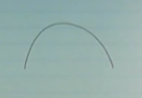
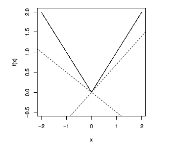
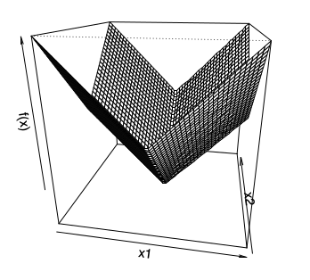
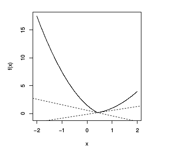

Altgradyanlar (Subgradients)
Altgradyanlar aslında bir algoritma değil, bir matematiksel kavram [1, 40:29], ve hem optimizasyon, hem analiz, hem de pratik bağlamda çok faydalı bir kavram. Hatırlarsak dışbükey ve türevi alınabilir bir $f$ için
$$ f(y) \ge f(x) + \nabla f(x)^T (y-x) \quad \forall x,y $$
gerekli ve yeterli bir şart. Yani fonksiyonuma herhangi bir noktada oluşturacağım teğet eğri, lineer yaklaşıksallık, fonksiyonum için bir global eksik / az tahmin edici (underestimator) olacaktır, yani hep ondan küçük kalacaktır.
Altgradyan nedir? Altgradyan üstteki gradyanin yerini alabilecek herhangi bir $g$ vektörüdür, yerine alabilecek derken üstteki ifade her $y$ için hala doğru olacak şekilde. Dışbükey fonksiyon $f$'nin $x$ noktasında altgradyanı herhangi bir $g \in \mathbb{R}^n$'dir öyle ki
$$ f(y) \ge f(x) + g^T (y-x) \quad \forall y $$
Teğet çizgi hakkında: görsel olaral hayal edersek kap şeklinde, yani dışbükey olan bir fonksiyona nerede teğet çizgi çekersem çekeyim fonksiyonun kendisi hep o çizginin üstünde kalır. Eğer fonksiyonum kap olmasaydı, habire aşağı yukarı inip çıkıyor olsaydı bir noktada o çizginin altına düşülebilirdi. Eğer $f$ türevi alınabilir ise dışbükey olmasının şartı üstteki ifadenin doğru olması.
Dışbükey fonksiyonlar için
1) $g$ her zaman mevcuttur (dışbükey olmayan fonksiyonlar için $g$'nin mevcudiyeti şart değildir). Bu güzel bir özellik.
2) Eğer $x$ noktasında $f$'in türevi alınabilir ise, tek bir altgradyan vardır, o da türevin kendisidir [1, 43:12], $g = \nabla f(x)$.
Aslında #2 kalemi dışbükey olmayan bir $f$ için bile geçerli, eğer $g$ varsa. Bu durumlarda illa altgradyan olması gerekmiyor, hatta türevi alınabilir dışbükey olmayan $f$ için bile $g$ olmayabiliyor.
Dışbükey olmayan (pürüzsüz) ve altgradyanı olmayan bir fonksiyon örneği nedir? Alttaki,

Bu fonksiyonun hiçbir yerde altgradyanı yok. Eğri üzerinde bir nokta arıyorum öyle ki oradan geçen bir çizgi tüm fonksiyonu üstte bıraksın.. böyle bir çizgi çizilemez. Altgradyan yok [1, 43:54]. Bazılarımız itiraz edebilir, "üstteki bir içbükey fonksiyon, dışbükeyin ters çevrilmiş hali". O zaman $x^3$ diyelim, pürüzsüz, ve altgradyanı yok.
Altgradyanı mevcut fonksiyonlar görelim, mesela mutlak değer fonksiyonu $f(x) = |x|$.

Altgradyanlar için farklı şartları görelim.
$x>0$ için tek bir altgradyan var, o da $g = 1$, yani fonksiyonun eğiminin ta kendisi, eğim=1. Aynı şekilde $x<0$ için, o zaman $g=-1$. Bu sonuç "eğer $f$'in $x$'te türevi alınabilir ise o noktada $g=\nabla f$" açıklaması ile uyuyor. $x=0$ noktası için birçok seçenek var, herhangi bir $[-1,1]$ öğesi için, yani -1 ve +1 arasındaki herhangi bir sayı olabilir, çizgili noktalar seçeneklerden ikisi.
Boyut atlayalım, $f(x) = ||x||_2$ fonksiyonunu görelim, $x$'in L2 norm'u. İki boyutta [1, 45:51],

Eğer $x \ne 0$ ise bu fonksiyonun türevi alınabilir (yoksa alınamaz, bir yaygın görüşe göre $x=0$'da problem yok, ama var) ve altgradyanı onun mevcut gradyanı, $x / ||x||_2$. $x=0$ noktasında altgradyan $g$ ${ z: ||z||_2 < 1}$ kümesinin herhangi bir öğesi.
Şimdi $f(x) = ||x||_1$'e bakalım,

Bu fonksiyonun $x=0$'da türevi alınamaz, aynen tek boyutlu (mutlak değer fonksiyonu) versiyonunda olduğu gibi. Ayrıca bu fonksiyonun herhangi bir eksende sıfır değer olduğu zamanda da türevi alınamaz. Altgradyan için öğe öğe yaklaşmak lazım, eğer bir öğe $x_i \ne 0$ ise $g_i = \mathrm{sign}(x_i)$, eğer $x_i = 0$ ise $g_i \in [-1,+1]$.
En son örnek [1, 48:35] iki dışbükey fonksiyonun maksimumu olanı, yani $f(x) = \max {f_1(x),f_2(x) }$ ki $f_1,f_2$ dışbükey ve türevi alınabilir olmak üzere, ve $f(x)$ bu iki fonksiyonun her $x$ noktasında $f_1(x)$ ve $f_2(x)$'den hangisi büyükse o. Bu tür bir maks fonksiyonunun sonucunun dışbükey olduğunu önceki derslerden biliyoruz.

Altgradyan yine farklı şartlara göre değişik oluyor. Eğer $f_1(x) > f_2(x)$ o zaman altgradyan özgün, $g = \nabla f_1(x)$. Eğer $f_2(x) > f_1(x)$ ise altgradyan özgün, $g = \nabla f_2(x)$.
Kabaca çizersek birbirlerini kesen $f_1$ ve $f_2$ düşünelim,

onların maks halleri yeşil ile [çok kabaca benim eklediğim] çizgi, yani kesişmenin solunda $f_2$ sağında $f_1$. Tabii ki sol tarafta $f_2$ aktif o zaman onun gradyanı geçerli, sağ tarafta $f_1$. Kesişme noktası, $f_1=f_2$ ilginç, $g = \alpha \nabla f_1(x) + (1-\alpha) f_2(x)$, yani $f_1,f_2$'nin herhangi bir dışbükey kombinasyonu, ki iki üstteki resimde görülen iki kesikli çizgiler bazı örnekler.
Altdiferansiyel (Subdifferential)
Dişbükey $f$'in tüm altgradyanlarına altdiferansiyel denir [1, 52:35]. Çoğunlukla kısmi türev için kullanılan aynı sembolle gösterilir, $\partial$ ile.
$$ \partial f(x) = { g \in \mathbb{R}^n: \quad g, f\textrm{'in altgradyanıdır} } $$
Yani $x$ noktasındaki tüm mümkün altgradyanların kümesi altdiferansiyel oluyor.
1) $\partial f(x)$ kapalı ve dışbükey bir kümedir. İşin ilginç tarafı bu dışbükey olmayan $f$'ler için bile geçerlidir. Niye olduğuna bakalım, $\partial f(x)$ $x$'te $f(x)$'in tüm altgradyanlarıdır. Diyelim ki $g_1,g_2$ altgradyanları bu altdiferansiyel kümesinde, $g_1 \in \partial f(x)$ ve $g_2 \in \partial f(x)$. Simdi $\alpha g_1 + (1-\alpha) g_2$ nerededir ona bakalım [1, 53:59]. Bu değerin $y-x$ ile iş çarpımını alırsak ve ona $f(x)$ eklersek acaba $f(y)$'den büyük bir değer elde eder miyiz?
$$ (\alpha g_1 + (1-\alpha) g_2)^T (y-x) + f(x) \underbrace{\le}_{?} f(y) \quad \forall y \qquad (1) $$
Üsttekini ispatlayabilirsek $\partial f(x)$'in bir dışbükey küme olduğunu ispatlayabilirim, çünkü iki geçerli altgradyanın herhangi bir dışbükey kombinasyonunu almışım ve hala küme içindeysem o küme dışbükey küme demektir.
Alttaki iki ifadenin doğru olduğunu biliyoruz,
$$ g_1^T (y-x) + f(x) \le f(y) $$
$$ g_2^T (y-x) + f(x) \le f(y) $$
Eğer iki üstteki ifadeyi $\alpha$ ile bir üstteki ifadeyi $1-\alpha$ ile çarparsam ve toplarsam, basitleştirme sonrası (1)'i elde ederim. İspat böylece tamamlanır [1, 55:11].
Dikkat edersek $f$'nin dışbükey olup olmadığından bahsetmedik bile.
2) Boş Olmamak: eğer $f$ dışbükey ise $\partial f(x)$ boş değildir.
3) Tek Altgradyan: önceden bahsettik ama eğer $f$ $x$ noktasında türevi alınabilir ise altdiferansiyelde tek bir öğe vardır o da o noktadaki gradyandır, $\partial f(x) = { \nabla f(x) }$.
4) Üstteki özelliğe tersten bakarsak, eğer $\partial f(x) = { g }$, yani altdiferansiyelde tek bir öğe var ise, o zaman $f$ o noktada türevi alınabilir demektir ve o noktadaki gradyan $g$'dir.
[disbukey geometri baglantisi atlanti]
Altdiferansiyel Calculus
Altgradyanların kendine has bir Calculus'u var, aynen gradyanları, vs. içeren Çok Değişkenli Calculus'ta olduğu gibi [1, 59:53]. Birazdan göstereceklerimizden daha fazlası ama alttakiler en faydalı olanları [1, 1:00:00]. Dişbukey $f$ fonksiyonları için alttakiler geçerlidir,
Ölçekleme: $\partial (af) = a \cdot \partial f$, $a$ sabit ise ve $a > 0$ olacak şekilde
Toplama: $\partial (f_1 + f_2) = \partial f_1 + \partial f_2$
Doğrusal Bileşim: Eğer $g(x) = f(Ax + b)$ ise o zaman $\partial g(x) = A^T \partial f(Ax + b)$. Bu altgradyanlar için bir tür Zincirleme Kanunu gibi. Hatta eğer $f$ türevi alınabilir ise, bu ifade tamı tamına Zincirleme Kanunu olurdu.
Noktasal Sonlu Maksimum: Eğer $f(x) = \max_{i=1,..,m} f_i(x)$ ise, o zaman
$$ \partial f(x) = conv \left( \bigcup_{i: f_i(x)=f(x)} \partial f_i(x) \right) $$
Biraz karmaşık duruyor ama daha önce iki fonksiyon maksimumu üzerinden gördüğümüz kavrama benziyor. Her noktada maks olan $f_i$'leri alıyoruz, ve bu fonksiyonların altgradyanlarını hesaplıyoruz. Ama bu altgradyanların birleşimi her zaman bir dışbükey küme oluşturmayabilir, ve altdiferansiyelin bir dışbükey küme olması gerekir, o zaman için elimizde olan altgradyanların $conv$ ile dışbükey zarfına (convex hull) bakarız. Yani sadece birleşim $\cup$ ile elde ettiğim kümeyi bir işlemden daha geçirerek onun dışbükey küme halini alıyorum.
[atlandi, norm, 1:09:00]
Niye Altgradyanlar?
1) Optimizasyon: Önemli bir sebep [1, 1:12:00]. Bir dışbükey fonksiyonun altgradyanını hesaplamak her zaman mümkündür, o zaman her dışbükey fonksiyonu minimize edebilirim. Bazı durumlarda bu yavaş olabilir ama en azından minimizasyon mümkün olur.
2) Dışbükey Analizi: Her $f$ için, dışbükey olsun olmasın,
$$ f(x^\ast) = \min_x f(x) \iff 0 \in \partial f(x^\ast) $$
Yani $x^\ast$ bir minimize edicidir sadece ve sadece 0 değeri $f$'in $x^\ast$ noktasında bir altgradyanı ise. Bu özelliğe çoğunlukla "altgradyan optimalliği" adı veriliyor. İspatı basit. Eğer $g$ vektörü $x^\ast$ noktasındaki altgradyan ise o zaman alttaki ifade her $y$ için doğrudur,
$$ f(y) \ge f(x^\ast) + 0^T (y-x^\ast) = f(x^\ast) $$
$$ f(y) \ge f(x^\ast) \quad \forall y $$
Üstteki ifade $x^\ast$ bir minimize edicidir diyor, o zaman sıfır bir altgradyandır.
Bazen üstteki ifadenin dışbükey olmayan fonksiyonlar için bile geçerli olduğunu unutanlar oluyor [1:14:32]. Bu her $f$ için doğru diyorum bazen bana şaşırmış şekilde bakıyorlar. Söylenen biraz sürpriz edici, evet. İkizlik ve KKT şartları hakkında konuşurken benzer şaşırtıcı ifadeler olacak.
Tabii eklemek gerekir bazen dışbükey olmayan fonksiyonlar için altgradyan hesaplanamaz, ya da mevcut değillerdir. Her problemi çözmek için bir yemek tarifi değil bu. Mesela başta gördüğümüz içbükey fonksiyon,
Altgradyanı yok (ama tabii minimize edicisi de yok).
Altgradyanlarla devam edelim [2, 01:11], onlar bir dışbükey fonksiyonun gradyanı kavramının genelleştirilmiş hali idi.
Bir dikkat edilmesi gereken durum var ama, altgradyanlar bir dışbükey fonksiyon için her zaman mevcuttur, ama bunu spesifik olarak "tanım kümesinin nispeten iç bölgelerinde olacak şekilde" diye vurgulamak gerekir. Mesela gösterge fonksiyonu $I$'nin uç noktalarında mevcut değildir.
Şimdi altgradyan yönteminin gücüne bir örnek görelim. Derslerimizin başında 1. derece optimallik şartını görmüştük [2, 05:30],
$$ \min_x f(x) \quad \textrm{öyle ki} \quad x \in C \qquad (3) $$
problemini çözmek istiyoruz, diyelim $f$ dışbükey ve türevi alınabilir. Bu problem için $x$'in çözüm olmasının şartı
$$ \nabla f(x)^T (y-x) \ge 0 \quad \forall y \in C $$
eşitsizliğinin doğru olmasıdır. Yani 1. derece minimallik gradyan sıfırı verir, o zaman herhangi bir $\nabla f(x)^T(y-x)$ yönünde adım atmak bizi her zaman bu minimallikten uzaklaştırmalıdır. Bu durum her olurlu $y \in C$ için doğru ise minimal yerdeyiz demektir [2, 05:50]. Ya da şöyle anlatalım, $x$ noktasındayız, $y$ noktasına gitmeyi düşünüyoruz. O zaman $y-x$ vektörünü oluşturuyoruz, ve su soruyu soruyoruz, "kriter fonksiyonunun gradyanı aynı çizgi de mi?". Eğer aynı yönde ise o yönde hareket etmek kriter $f(x)$'i arttırır. Yani eğer gradyan her mümkün olurlu yön ile aşağı yukarı aynı yönü gösteriyorsa (azaltma / çoğaltma, -90/+90 derece bağlamında) o zaman minimum noktadayız demektir.

İşte bunu altgradyan perspektifinden ispatlayabiliriz [2, 06:33].
Üsttekini altgradyan perspektifinden ispatlayabiliriz. Önce problemimizi sınırsız bir formatta tekrar tanımlayacağız. Sınırlamayı bir gösterge $I_C$ haline getirerek bunu yapabiliriz,
$$ \min_x f(x) + I_C(x) \qquad (2) $$
ki $I_C(x) = 0$ eğer $x$, $C$ kümesi içindeyse, dışındaysa sonsuzluk. Şimdi üstteki fonksiyona altgradyan optimalliği uygulayalım, eğer üstteki fonksiyonu minimize eden bir nokta varsa elimde, bunun tercümesi sıfırın o noktada fonksiyonun altgradyanı olması. Fonksiyonun altgradyanını hesaplayalım, kurallarımıza göre iki dışbükey fonksiyon toplamının altgradyani o fonksiyonların ayrı ayrı altgradyanlarının toplamı. $f$ dışbükey, $I_C$ dışbükey (çünkü $C$ kümesi dışbükey küme). $f$ pürüzsüz, o zaman $x$'te onun altgradyan kümesi sadece o noktadaki gradyan. $I_C$'nin altgradyanı normal koni $N_C$. O zaman
$$ 0 \in \partial ( f(x) + I_C(x) ) $$
$$ \iff 0 \in \nabla f(x) + N_C(x) $$
olmalı, ya da
$$ \iff - \nabla f(x) \in N_C(x) $$
olmalı. Şimdi normal koniyi hatırlayalım, tanımı
$$ N_C(x) = { g \in \mathbb{R}^n: g^T x \ge g^T y \quad \forall y \in C $$
buna göre iki üstteki $N_C$, $g=-\nabla f$ üzerinden
$$ \iff -\nabla f(x)^T x \ge -\nabla f(x)^T y \quad \forall y \in C $$
olarak açılabilir. Ya da
$$ \iff \nabla f(x)^T(y-x) \ge 0 \quad \forall y \in C $$
Üstteki 1. derece optimallik şartına benziyor zaten. $-\nabla f(x)$ üstteki tanımın bir öğesidir, o zaman 0 altgradyan kümesinin öğesidir.
İşte gayet temiz bir şekilde optimallik ispatı yapmış olduk. Bu arada sınırlama içeren optimizasiyon problemi için alttaki tanım
$$ 0 \in \partial f(x) + N_c $$
ifadesi her nasılsa tamamen genel, yani dışbükey bir problem tanımı için gerekli ve yeterli bir şart çünkü hatırlarsak bahsettik ki tüm dışbükey problemleri (2) ya da (3) formunda öne sürmek mümkün. Tabii üstteki formlea iş yapmak kolay değildir, çünkü $N_C$ ile çalışmak zor. Eğer $C$ çetrefil bir küme ise, mesela
$$ C = { x: g_i(x) \le 0, Ax = b } $$
gibi, o zaman normal koniyi oluşturmak zor olacaktır. Yani iki üstteki tanımın her zaman faydalı olduğunu söyleyemeyiz, ama her dışbükey problem için gerekli ve yeterli şart olduğunu söyleyebiliyoruz.
Sonradan optimalliği tanımlamanın farklı bir yolunu göreceğiz. Sınırlama ifadeleri olduğu zaman problemler daha az çetin / çözülür hale gelir, problemler sınırsız-sınırlı halde birbirine eşit şekilde tanımlanabilirler, ama sınırlı tanımları çözmek daha kolay. KKT koşulları burada devreye girecek. Yani her şeyi kritere tıkmak, gösterge vs ile uğraşmak, altgradyan almak yerine bu tür tanımla çalışmak daha rahat oluyor [2, 12:00].
Altgradyan optimalliğinin bazı diğer örneklerini görelim, mesela Lasso için altgradyan optimalliği. Bazılarının bilebileceği üzere Lasso problemini parametrize etmenin iki yolu vardır, birisi katsayılar üzerinde bir L1 norm kısıtlaması tanımlamak, diğeri ise alttaki gibi onu kritere dahil etmek,
$$ \min_\beta \frac{1}{2} || y - X \beta ||_2^2 + \lambda ||\beta||_1 \qquad (5) $$
ki $\lambda \ge 0$. Altgradyan optimalliğinde sadece ve sadece alttaki şart geçerliyse elimizde bir çözüm var diyebiliyoruz, bu şart,
$$ 0 \in \big( \frac{1}{2} || y - X \beta ||_2^2 + \lambda ||\beta||_1 \big) $$
yani eğer 0 kriterimin altgradyan kümesinde ise. Üstteki altgradyanın uygulandığı toplam işaretinin iki tarafı da dışbükey o zaman onları altgradyanların toplamı olarak açabilirim, ayrıca soldaki terim bir de pürüzsüz olduğu için tek altgradyan normal gradyandır,
$$ \iff 0 \in -X^T (y - X\beta) + \lambda \partial ||\beta||_1 $$
$$ \iff X^T (y - X\beta) = \lambda v \qquad (4) $$
herhangi bir $v \in \partial ||\beta||_1$ için. L1 norm'un altgradyanı için daha önce gördüğümüz üzere bileşen bileşen bakmak gerekiyor, ve farklı şartlara göre parçalı bir fonksiyon elde edeceğiz,
$$ v_i \in \left\{ \begin{array}{ll} {1} & \textrm{eğer } \beta_i > 0 \\ {-1} & \textrm{eğer } \beta_i < 0 \\ {[} -1,+1{]} & \textrm{eger } \beta_i = 0 \end{array} \right. $$
Yeni öyle bir $\beta$ arıyorum ki herhangi bir $v$ vektörü için (4)'u tatmin edecek ve bu $v$ geçerli bir altgradyan olacak, yani üstteki şartlara uyacak. O zaman çözüme erişmişim demektir. Çözümü şu anda vermiyoruz, bunlar çözüm için uyulması gereken optimallik şartları [2, 15:24].
Her $\beta_i$ için üstteki denklemin nasıl oluşacağını görmek istersek, ve $X_1,..,X_p$ değerleri $X$ matrisinin kolonları olacak şekilde
$$ \left[\begin{array}{ccc} \uparrow & \uparrow & \\ && \\ X_1 & X_2 & \dots \\ && \\ \downarrow & \downarrow & \end{array}\right]^T \left[\begin{array}{c} y_1 \\ \vdots \\ y_p \end{array}\right] - \left[\begin{array}{ccc} \uparrow & \uparrow & \\ && \\ X_1 & X_2 & \dots \\ && \\ \downarrow & \downarrow & \end{array}\right] \left[\begin{array}{c} \beta_1 \\ \vdots \\ \beta_p \end{array}\right] = \lambda \left[\begin{array}{c} v_1 \\ \vdots \\ v_p \end{array}\right] $$
O zaman bunu her $v_i$ olasılığı için yazarsak, $\beta_i$'in sıfır olup olmadığı üzerinden bir parçalı fonksiyon ortaya çıkartabiliriz. Altgradyan optimallik şartı,
$$ \left\{ \begin{array}{ll} X_i^T (y-X\beta) = \lambda \cdot \mathrm{sign}(\beta_i) & \textrm{eger } \beta_i \ne 0 \\ | X_i^T (y-X\beta) | \le \lambda & \textrm{eger } \beta_i = 0 \end{array} \right. $$
haline geldi. İkinci satırı nasıl elde ettik? Eğer $\beta_i=0$ ise bu bana $\lambda v$ ifadesi $-\lambda$ ve $+\lambda$ arasında herhangi bir yerde olabilir diyor (çünkü $v_i$ parçalı fonksiyonunda $\beta_i=0$ ise $v_i$ -1 ve +1 arası herhangi bir değer dedik), ve $-\lambda$ ve $+\lambda$ arası olma durumunu son satırdaki mutlak değer ifadesine tercüme edebiliriz.
Dikkat, üstteki ifade optimalliğe bakma / kontrol etmek için bir yöntem. Birisi size bir vektör veriyor [2, 16:57], sonra soruyor "bu vektör Lasso kriterine göre optimal midir?" Öyle olup olmadığına bakmak için vektörün her ögesine bakıyoruz, ve üstteki kontrolü işletiyoruz. Eğer her öge optimal ise evet diyoruz, tek bir öğe bile optimal değilse hayır diyoruz.
Üstteki parçalı formüldeki ikinci bölümü ilginç bir şekilde kullanabiliriz. Diyelim ki 100 değişkenlik modeli Lasso ile veriye uydurduk, ve $\beta$ katsayıları elde ettik, bir regresyon yaptık yani. Diyelim ki çözümden sonra birisi geliyor size 101. kolon veriyor, acaba tüm uydurma işlemini baştan tekrar mı yapmak lazım? Belki hayır, $| X_{101}^T (y-X\beta) | \le \lambda$ kontrolünü yaparız, eğer koşul doğru ise o zaman $\beta_{100} = 0$ demektir, ve bu katsayıya gerek yoktur, modelin geri kalanı değişmeden kalır [2, 20:42].
Bir diğer ilginç uygulama Lasso'nun basitleştirilmiş hali; $X = I$ yani birim matrisi olduğu durum. Bu yaklaşımla bazılarının gürültü silme (denoising) dediği işlemi yapabilmiş oluyoruz. $X=I$ deyince Lasso'da geri kalan,
$$ \min_\beta \frac{1}{2} || y - \beta ||_2^2 + \lambda ||\beta||_1 $$
Bu problem ifadesi diyor ki "öyle bir $\beta$ vektörü bul ki $y$'ye olabildiği kadar yakın olsun ve $\beta$ üzerinde bir L1 cezası olsun". Yana bana içinde bir sürü gözlem noktası taşıyan bir $y$ veriliyor ve ben bu gözlemleri en iyi şekilde yaklaşıklayan $\beta$'yi arıyorum ve bu $\beta$'nin seyrek olmasını [2, 24:23] tercih ediyorum (L1 cezası ile bu oluyor, büyük değerler cezalandırılınca çözü katsayının sıfıra yakın olmasını özendirmiş oluruz). Artık biliyoruz ki üstteki problemi altgradyan optimalliği ile çözmek mümkün.
Daha önce gördüğümüz Lasso altgradyan optimalliğini $X=I$ için tekrar yazarsak
$$ \left\{ \begin{array}{ll} (y-\beta_i) = \lambda \cdot \mathrm{sign}(\beta_i) & \textrm{eger } \beta_i \ne 0 \\ | |y-\beta_i| | \le \lambda & \textrm{eger } \beta_i = 0 \end{array} \right. $$
Çözüm $\beta = S_\lambda(y)$, ki $S_\lambda(y)$'ye yumuşak eşikleme (soft-threshold) operatörü deniyor. Üstteki optimalliğe uyan bir çözüm, hatta tek çözüm, budur.
$$ [ S_\lambda(y) ]_i = \left\{ \begin{array}{ll} y_i - \lambda & \textrm{eğer } y_i > \lambda_i \\ 0 & \textrm{eğer } -\lambda \ge y_i \ge \lambda, \quad i=1,..,n \\ y_i + \lambda & \textrm{eğer } y_i < -\lambda_i \end{array} \right. $$
Çözümün optimallik şartlarına uyup uymadığı rahatça kontrol edilebilir. Formülde $\beta=S_\lambda(y)$ diyerek alttakilerin doğru olup olmadığına bakarız,
Eğer $y_i > \lambda, \beta_i = y_i - \lambda > 0$ ise $y_i-\beta_i = \lambda = \lambda \cdot 1$ mı?
Eğer $y_i < -\lambda$ ise benzer şekilde
Eğer $|y_i| \ge \lambda, \beta_i=0$ ise $|y_i-\beta_i| = |y_i| \ge \lambda$ mi?
[distance to convex set örneği atlandı]
Daha önce gradyan inişi (gradient descent) algoritmasını görmüştük, bu algoritma çok basittir. Şimdi işleri biraz daha zorlaştıracağız [2, 48:00]. Bu metotun bir dezavantajı optimize edilen $f$'nin türevi alınabilir bir fonksiyon olma zorunluluğu. Diğer bir dezavantaj yakınsamanın uzun zaman alabilmesi.
Altgradyan Metodu
Gradyan inişi yapısına benziyor, $f$'in dışbükey olması ve $\mathrm{dom}(f) = \mathbb{R}^n$ olması lazım, ama $f$'nin pürüzsüz olma zorunluluğu yok.
Gradyan inişi gibi özyineli bir şekilde, $x^{(0)}$'dan başlıyoruz, ve
$$ x^{(k)} = x^{(k-1)} - t_k \cdot g^{(k-1)}, \quad k=1,2,3,.. $$
adım atarak ilerliyoruz, öyle ki $g^{(k-1)} \in \partial f(x^{(k-1)})$ yani $f$'nin $x^{(k-1)}$ noktasındaki herhangi bir altgradyanı. Adım ata ata gidiyorum, her adımda mevcut altgradyanlara bakıyorum, herhangi birini seçiyorum, ona $g^{(k-1)}$ diyelim, ve $x$'i bu yönde olacak şekilde bir $t_k$'ye oranlı olarak güncelliyorum [2, 49:50].
Altgradyan metotunun ilginç özelliklerinden biri her adımda iniş yapmanın garanti olmaması (herhalde onun için "altgradyan inişi" yerine "altgradyan metotu" ismi verilmiş). Bu sebeple adım atarken o ana kadar, yani $x^{(0)},.., x^{(k)}$ içinde olan en iyi (best) (en minimal) noktayı hatırlamak gerekiyor, $x_{best}^{(k)}$, ki
$$ f(x_{best}^{(k)}) = \min_{i=0,..,k} f(x^{(i)}) $$
Eğer mesela altgradyan metotunun 100,000 adım işletmişsem erişilmiş minimal nokta olarak bu hatırlanan en iyi noktayı sonuç olarak rapor ederim.
Adım büyüklüğü nasıl seçilir?
Sabit adım büyüklüğü seçmek bir seçenek. Küçükçe seçilen böyle bir büyüklük işler.
Çokça kullanılan bir diğer seçenek "gittikçe yokolan" adım büyüklüğü. Bu tür adım seçimi için kullanabilecek pek çok kural var, aranan bir nitelik sıfıra gidilmesi ama çok hızlı gidilmemesi. Mesela $t_k = 1/k$ uygun. Altgradyanlarda geriye iz sürmenin karşılığı yok.
Yakınsama analizi
Altgradyan metotunun yakınsama analizi gradyan inişinin analizinden biraz farklı [2, 54:15]. Diyelim ki elimizde bir dışbükey fonksiyon $f$ var ve tanım kümesi herşey, $\mathrm{dom}(f) = \mathbb{R}^n$. Fonksiyon ayrıca Lipschitz sürekli, fonksiyonun sürekli olduğunun söylemiyoruz dikkat, fonksiyon sabit $G > 0$ üzerinden Lipschitz sürekli, yani
$$ |f(x) - f(y)| \ge G || x-y ||_2 \quad \forall x,y $$
Bunu baz alarak iki tane teori öne sürebiliriz, birisi sabit adım büyüklüğü, diğeri azalan adım büyüklüğü için.
Yokolan adım büyüklüğü için iki şart tanımlayalım, "kare toplanabilir ama toplanabilir değil", yani şu iki şart,
$$ \sum_{k=1}^{\infty} t_k^2 < \infty, \quad \sum_{k=1}^{\infty} t_k - \infty $$
Şimdi iki teoriyi tanımlayabiliriz,
Teori 1
Sabitlenmiş $t$ için altgradyan metotu alttaki şartı tanımlar,
$$ \lim_{k \to \infty} f(x_{best}^{(k)} ) \le f^\ast + G^2 t / 2 $$
Üstteki ifade diyor ki eğer altgradyan metotunu sonsuza kadar işletirsek eldeki en iyi noktadan elde edilecek fonksiyon değeri gerçek optimum artı Lipschitz sabitinin karesi çarpı $t/2$'dan küçük olacaktır, ki $t$ sabitlenmiş adım büyüklüğü. Ama üstteki yine de çözüm için bir limit vermiyor. Onun için alttaki lazım,
Teori 2
Yokolan adım büyüklükleri için
$$ \lim_{k \to \infty} f(x_{best}^{(k)} ) = f^\ast $$
[ek detaylar atlandı]
Altgradyan metotuna bir örnek olarak [2, 1:01:36] regülarize edilmiş lojistik regresyona bakabiliriz. $\beta$ katsayılarını bulmaya uğraşıyoruz, ve veriye uydurma bağlamında bir kayıp fonksiyonunu minimize etmeye uğracağız. Önce normal regresyon,
$$ f(\beta) = \sum_{i=1}^{n} \left(-y_ix_i^T\beta + \log( 1 + \exp (x_i^T\beta) \right) $$
Üstteki pürüzsüz ve dışbükey bir fonksiyon.
$$ \nabla f(\beta) = \sum_{i=1}^{n} (y_i - p_i(\beta)) x_i $$
ki $p_i(x) = \exp(x_i^T\beta) / (1+ \exp(x_i^T\beta))$, $i=1,..,n$.
Regülarize edilmiş lojistik regresyon
$$ \min_\beta f(\beta) + \lambda \cdot P(\beta) $$
ki $P(\beta) = ||\beta||_2^2$ olabilir (Ridge cezası) ya da $P(\beta) = ||\beta|_1|$ (Lasso cezası). Bu cezalardan ilki pürüzsüz, diğeri değil. Böylece birinde gradyan inişi diğerinde altgradyan metotu kullanmak zorunda olacağız.
Ekler
Alttaki örnek [3]'ten,
$$ \min_w F(w) = \frac{1}{2} \sum_{i=1}^{N} (x_i^T w - y_i)^2 + \lambda ||w||_1 $$
gibi bir Lasso örneği var.
import pandas as pd
import numpy as np
import matplotlib.pyplot as plt
def subgrad(w):
return X.T*(X*w-y) + lamda*np.sign(w)
def obj(w):
r = X*w-y;
return np.sum(np.multiply(r,r))/2 + lamda * np.sum(np.abs(w))
N = 40
dim = 10
max_iter = 200
lamda = 1/np.sqrt(N);
np.random.seed(50)
w = np.matrix(np.random.multivariate_normal([0.0]*dim, np.eye(dim))).T
X = np.matrix(np.random.multivariate_normal([0.0]*dim, np.eye(dim), size = N))
y = X*w
w = np.matrix([0.0]*dim).T
obj_SD = []
gamma = 0.01
for t in range(0, max_iter):
obj_val = obj(w)
w = w - gamma * subgrad(w)/np.sqrt(t+1)
obj_SD.append(obj_val.item())
if (t%5==0): print('iter= {},\tobjective= {:3f}'.format(t, obj_val.item()))
print (w)
iter= 0, objective= 169.279279
iter= 5, objective= 24.721959
iter= 10, objective= 13.195682
iter= 15, objective= 8.739994
iter= 20, objective= 6.419780
iter= 25, objective= 5.034598
iter= 30, objective= 4.138547
iter= 35, objective= 3.526977
iter= 40, objective= 3.093047
iter= 45, objective= 2.775883
iter= 50, objective= 2.538530
iter= 55, objective= 2.357443
iter= 60, objective= 2.217031
iter= 65, objective= 2.106647
iter= 70, objective= 2.018829
iter= 75, objective= 1.948229
iter= 80, objective= 1.890943
iter= 85, objective= 1.844077
iter= 90, objective= 1.805447
iter= 95, objective= 1.773392
iter= 100, objective= 1.746629
iter= 105, objective= 1.724158
iter= 110, objective= 1.705193
iter= 115, objective= 1.689110
iter= 120, objective= 1.675411
iter= 125, objective= 1.663694
iter= 130, objective= 1.653633
iter= 135, objective= 1.644963
iter= 140, objective= 1.637466
iter= 145, objective= 1.630964
iter= 150, objective= 1.625306
iter= 155, objective= 1.620369
iter= 160, objective= 1.616050
iter= 165, objective= 1.612262
iter= 170, objective= 1.608931
iter= 175, objective= 1.605996
iter= 180, objective= 1.603403
iter= 185, objective= 1.601108
iter= 190, objective= 1.599073
iter= 195, objective= 1.597264
[[-1.53942055]
[-0.02366012]
[-0.61081721]
[-1.43597808]
[ 1.3626909 ]
[-0.47342589]
[-0.78826118]
[ 1.04965236]
[-1.27159815]
[-1.32969646]]
Bir diğer örnek [4]'ten, burada kodlanan (5)'teki formül aslında, kodun sembollerini kullanırsak,
$$ \min_x \frac{1}{2} || Ax - b||_2 + \lambda ||x||_1 $$
L1 normu $||x||_1$ gradyan inişi için problemli o sebeple altgradyan metotu kullanacağız. Veri olarak [5]'te görülen diyabet verisini alabiliriz,
import scipy.io as sio
import pandas as pd
import numpy as np
import matplotlib.pyplot as plt
import numpy.linalg as lin
def subgrad_func(A,b,lam):
n2 = A.shape[1]
x = np.zeros((n2,1))
k=1
g = np.ones((n2,1))
t = 0.01
f = []
while True:
if k>3:
crit = np.abs(f[k-2]-f[k-3])/f[k-2]
if crit < 1e-5: break
tmp = 0.5*lin.norm(np.dot(A,x)-b,2)**2+lam*lin.norm(x,1);
if k%10==0: print (tmp)
f.append(tmp)
s = x.copy()
s[x>0]=1
s[x<0]=-1
if len(s[x==0])>0:
s[x==0] = -2*np.random.rand(len(x==0))+1
g = np.dot(A.T,np.dot(A,x)-b) + lam*s
x = x - t*g
k = k+1
return x
diabetes = pd.read_csv("../../stat/stat_120_regular/diabetes.csv",sep=';')
y = np.array(diabetes['response'].astype(float)).reshape(442,1)
A = np.array(diabetes.drop("response",axis=1))
lam = 0.1;
x = subgrad_func(A,y,lam);
print ('x')
print (x)
6167530.253256479
6017359.332614086
5936043.378499364
5887955.958919385
5856837.417105291
5835069.931049544
5818932.590413047
5806489.16976122
5796653.745550204
5788760.388544399
5782366.953999686
5777155.717300746
5772889.40103409
5769385.329280358
5766499.620202982
5764117.531938736
5762146.838816163
5760513.025122407
5759155.660694774
5758025.5987459235
5757082.775086282
5756294.462375693
5755633.876252789
x
[[ 5.34807751]
[-200.87752927]
[ 490.9420537 ]
[ 304.14877939]
[ -43.03872491]
[-107.97583692]
[-207.47086585]
[ 127.15527296]
[ 410.70880916]
[ 115.41867007]]
Bir dışbükey kümesi üzerinden tanımlı ama pürüzsüz olmayabilecek bir dışbükey fonksiyonu minimize etmek için yansıtılan altgradyan (projected subgradient) metotu adlı bir metot ta kullanılabilir [2, 22:04].
Dışbükey $f$'yi dışbükey küme $C$ üzerinden optimize etmek için
$$ \min_x f(x) \quad \textrm{öyle ki} \quad x \in C $$
$$ x^{(k)} = P_C \left( x^{(k-1)} - t_k g_k^{(k-1)} \right) $$
Bu metot normal altgradyan metotu gibi, tek fark parantez içinde görülen altgradyan adımı atıldıktan sonra elde edilen sonucun $C$ kümesine geri yansıtılması (projection), çünkü atılan adım sonucunda olurlu bir sonuç elde etmemiş olabiliriz.
Yakınsama analizi normal altgraydan metotuna benziyor, bu metotla da benzer yakınsama garantisi elde edilebiliyor, yakınsama oranı da buna dahil.
Yansıtma adımı bazen zor olabilir, hangi durumlarda kolay olduğunun listesi aşağıda [2, 23:53]. Hangi kümelere yansıtmak kolaydır?
1) Doğrusal görüntüler: ${ Ax + b: x \in \mathbb{R}^n }$
2) ${ x: Ax = b }$ sisteminin çözüm kümesi
3) Negatif olmayan bölge: $\mathbb{R}_{+}^n = {x: x \ge 0 }$. Verilen vektörün negatif değerlerinin sıfır yapmak, pozitifleri tutmak bize o vektörün negatif olmayan bölge karşılığını veriyor.
4) Bazı norm topları ${ x: ||x||_p \le 1 }$, $p=1,2,..,\infty$ için. Daha önce 2-norm topuna yansıtmayı gördük, vektörü alıp normalize edersek bu kümeye yansıtma yapmış oluyoruz aslında. Bu yansıtma bizi o vektörün 2-norm topundaki en yakın diğer vektöre götürüyor. Sonsuz norm kolay, bir kutuya yansıtma yapmış oluyoruz, bunun ne demek olduğunu düşünmeyi size bırakıyorum, 1-norm en zoru.
5) Bazı çokyüzlüler (polyhedra) ve basit koniler.
Bir uyarıda bulunalım, tanımı basit duran kümeler ortaya çıkartmak kolaydır, fakat bu kümelere yansıtma yapan operatörler çok zor olabilir. Mesela gelişigüzel bir çokyüzlü $C = { x: Ax \le b }$ kümesine yansıtma yapmak zordur. Bu problemin kendisi apayrı bir optimizasyon problemi aslında, bir QP.
[stochastic subgradient method atlandı]
Altgradyanların iyi tarafı genel uygulanabilirlik. Altgradyan metotları dışbükey, Lipschitz fonksiyonları üzerinde bir anlamda optimaldir. Ünlü bilimci Nesterov'un bu bağlamda bir teorisi vardır [2, 45:12], pürüzsüz durumlarda ve 1. derece yöntemlerde altgradyanların lineer kombinasyonları üzerinden güncellemenin sonucu olan adımların başarısına bir alt sınır tanımlar.
Kaynaklar
[1] Tibshirani, Convex Optimization, Lecture Video 6, https://www.youtube.com/channel/UCIvaLZcfz3ikJ1cD-zMpIXg
[2] Tibshirani, Convex Optimization, Lecture Video 7, https://www.youtube.com/channel/UCIvaLZcfz3ikJ1cD-zMpIXg
[3] He, IE 598 - BIG DATA OPTIMIZATION,
http://niaohe.ise.illinois.edu/IE598_2016/
[4] Feng, Lasso, https://github.com/fengcls/Lasso
[5] Bayramlı, {\em Istatistik, Regresyon, Ridge, Lasso, Çapraz Sağlama, Regülarize Etmek